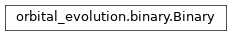

orbital_evolution.binary module¶
Class Inheritance Diagram¶
Define a class for binaries which can be evolved.
-
class
orbital_evolution.binary.Binary(primary, secondary, *, disk_lock_frequency, disk_dissipation_age, initial_semimajor=None, initial_orbital_period=None, initial_eccentricity=0.0, initial_inclination=0.0, secondary_formation_age=None)[source]¶ Bases:
objectA class for binaries POET can evolve.
-
__init__(primary, secondary, *, disk_lock_frequency, disk_dissipation_age, initial_semimajor=None, initial_orbital_period=None, initial_eccentricity=0.0, initial_inclination=0.0, secondary_formation_age=None)[source]¶ Create a binary system out of two bodies.
- Parameters
primary (-) – The first body in the system. Assumed to always be there, so for a star-planet system this should be the star.
secondary (-) – The second body in the system, initially may not be there and later may be engulfed by the first body.
disk_lock_frequency (-) – Frequency of the surface spin of the primary when disk is present in rad/day.
disk_dissipation_age (-) – Age when disk dissipates in Gyrs.
initial_semimajor (-) – The semimajor axis of the orbit at which the secondary forms in solar radii. If omitted, initial_orbital_period must be specified.
initial_orbital_period (-) – Alternative to specifying the initial semimajor axis.
initial_eccentricity (-) – The eccentricity of the orbit at which the secondary forms.
initial_inclination (-) – Inclination between surface zone of primary and initial orbit in radians.
secondary_formation_age (-) – Age when the secondary forms.
Returns: None
-
_create_c_code(c_code_fname, *, final_age, max_time_step, precision, eccentricity_expansion_fname)[source]¶ Create a c++ file calculating the currently set-up evolution.
-
_get_evolution_quantities()[source]¶ Return the list of quantities in the evolution of the binary.
- Parameters
None –
- Returns
A list of the evolution quantities tracked for an evolution of the current system.
- Return type
[str]
-
configure(*, age, semimajor, eccentricity, spin_angmom, inclination, periapsis, evolution_mode)[source]¶ Set the current state (orbit) of a system.
- Parameters
age (-) – The age to set the system to.
semimajor (-) – The semimajor axis of the orbit in solar radii.
eccentricity (-) – The eccentricity of the orbit.
spin_angmom (-) – The spin angular momenta of the zones of the bodies (body 1 first, outermost zone to innermost, followed by body 2).
inclination (-) – The inclinations of the zones of the bodies (same order as spin_angmom). The surface zone inclination must be omitted for single body systems.
periapsis (-) – The arguments of periapsis of the zones of the bodies (same order as spin_angmom, but not including the surface zone of the first body).
evolution_mode (-) – The evolution mode to assume. Must be one of the constants defined.
Returns: None
-
evolution_modes= ['LOCKED_SURFACE_SPIN', 'BINARY', 'SINGLE', 'TABULATION']¶
-
static
evolution_quantity_c_type(quantity)[source]¶ Return the ctypes type of the given evolution quantity.
-
evolve(final_age, max_time_step, precision, required_ages, *, print_progress=False, create_c_code='', eccentricity_expansion_fname=None)[source]¶ Evolve the system forward from its current state.
- Parameters
final_age (-) – The age at which to stop the evolution in Gyrs. The starting age must be already set for the system through configure.
max_time_step (-) – The maximum size of the time step allowed in Gyrs.
precision (-) – The precision to require of the solution.
required_ages (-) – Ages at which the evolution must stop precisely.
print_progress (-) – Should output be created to show the progress in time steps.
create_c_code (-) – The name of a file to create which when compiled will calculate the exact evolution currently set-up for this binary. If empty, no such file is created.
eccentricity_expansion_fname (-) – The filename from which eccentricity expansion coefficients were read. Only used if create_c_code is not empty.
Returnns: None
-
get_evolution(quantities=None)[source]¶ Return the last calculated evolution.
- Parameters
quantities (-) – An iterable of quantities to read the evolution of. The evolution of omitted quantities can still be obtained later by subsequent calls to this method. The allowed entries are in the star_star_evolution_quantities for binary star systems or in star_planet_evolution_quantities for a star-planet system. If None, it defaults to the full list of quantities for the given system.
- Returns
A structure with mebers named the same way as the input list of quantities containing the values of the corresponding quantity at each evolution step. The order is always in increasing age.
- Return type
Sturture
-
orbital_angular_momentum(semimajor, eccentricity)[source]¶ The orbital agular momentum for the given semimajor/eccentricity.
- Parameters
semimajor (-) – The semimajor axis of the system.
eccentricity (-) – The orbital eccentricity.
- Returns
The orbital angular momentum if the two bodies are in an orbit with the given semimajor axis and eccentricity in solar units.
-
orbital_frequency(semimajor)[source]¶ The orbital frequency of the system for the given semimajor axis.
- Parameters
semimajor (-) – The semimajor axis at which the system’s orbital period is required in solar radii.
- Returns
The orbital period in days if the two bodies of this system are in an orbit with the given semimajor axis.
-
orbital_period(semimajor)[source]¶ The orbital period of the system for the given semimajor axis.
- Parameters
semimajor (-) – The semimajor axis at which the system’s orbital period is required in solar radii.
- Returns
The orbital period in days if the two bodies of this system are in an orbit with the given semimajor axis.
-
semimajor(orbital_period)[source]¶ The semimajor axis of the system for the given orbital period.
- Parameters
orbital_period (-) – The orbital period at which the system’s orbital period is required in days.
- Returns
The semimajor axis in solar radii if the two bodies of this system are in an orbit with the given period.
-